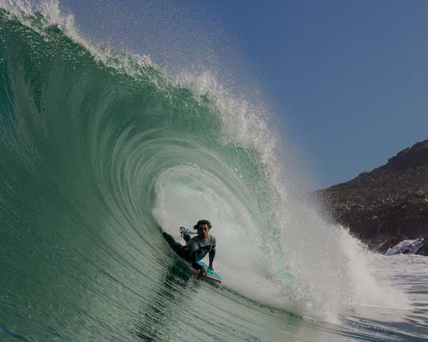
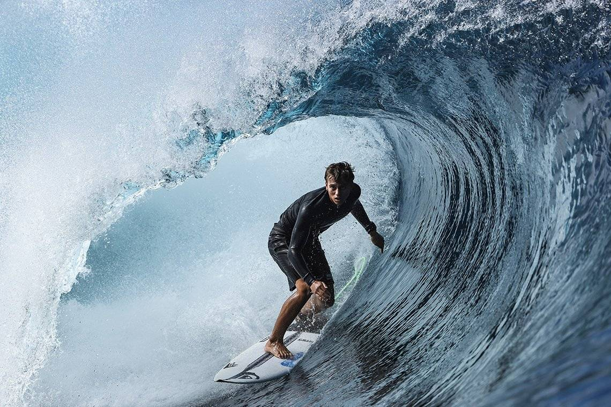
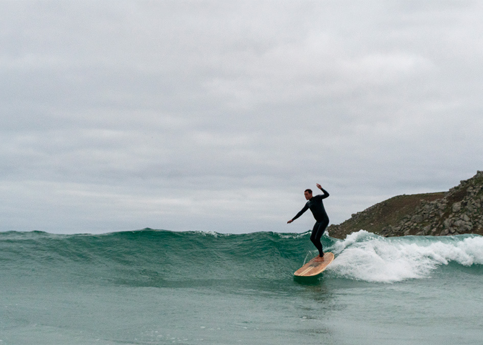

ENCUENTRA LO MEJOR DEL SURFING AQUI

El bodyboard es un deporte acuático que consiste en desplazarse sobre una tabla por la ola para llegar a la orilla. Se practica en aguas superficiales y es similar al surf, pero con una tabla más pequeña y flexible.
BODYBOARD

El surf es un deporte acuático que consiste en deslizarse sobre una ola mientras se mantiene de pie sobre una tabla.
SURF

El longboard es una tabla de surf que se caracteriza por su gran longitud, que suele ser de entre 8 y 10 pies (2,40 y 3 m), y su anchura. Estas características le otorgan estabilidad y flotabilidad, lo que la hace ideal para surfear olas pequeñas o menos intensas.
LONGBOARD